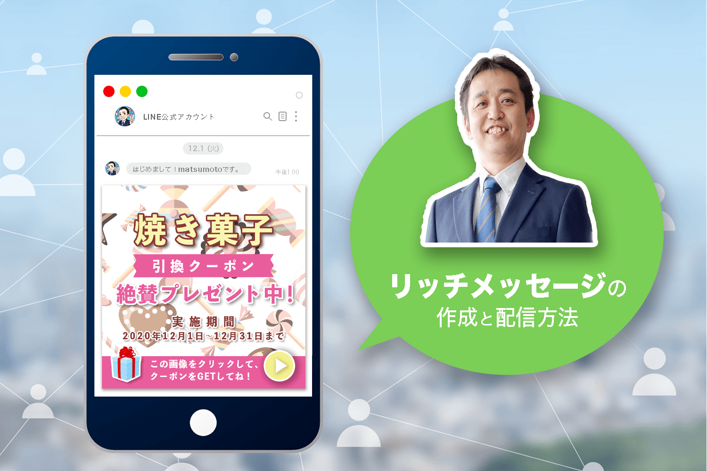
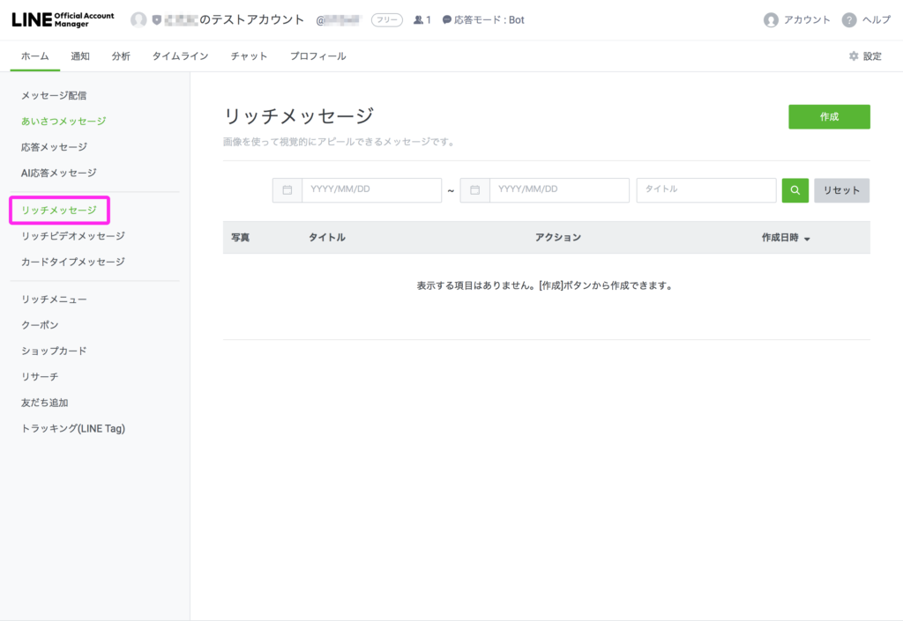
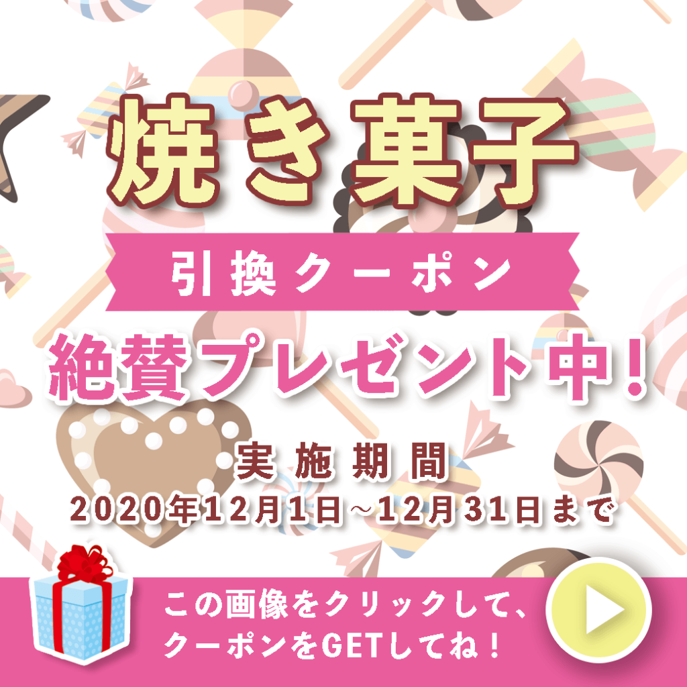
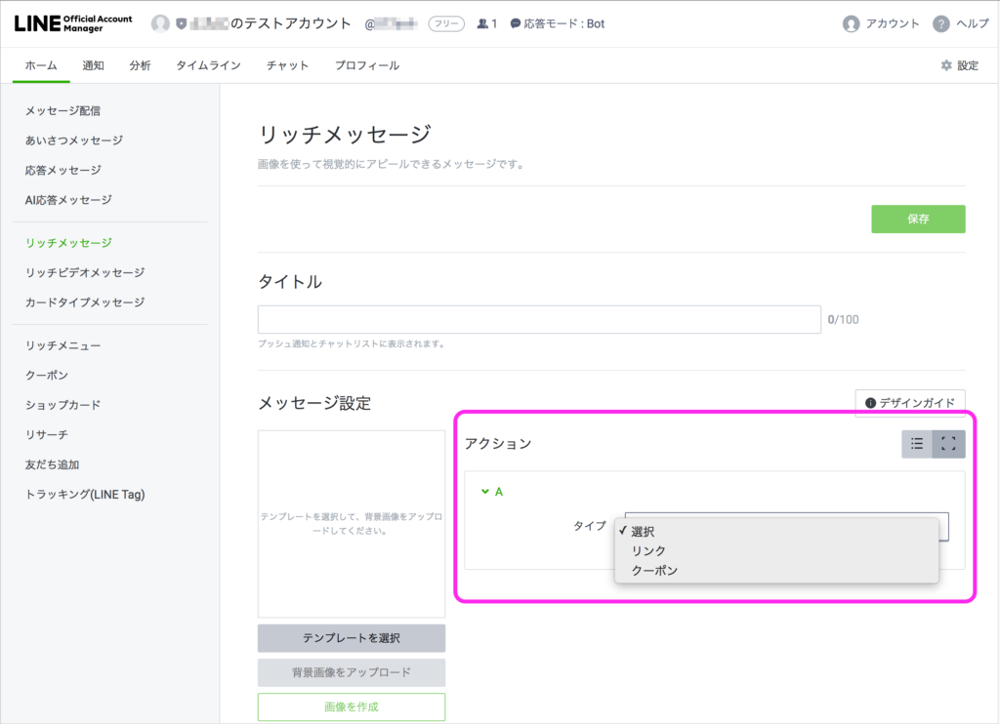
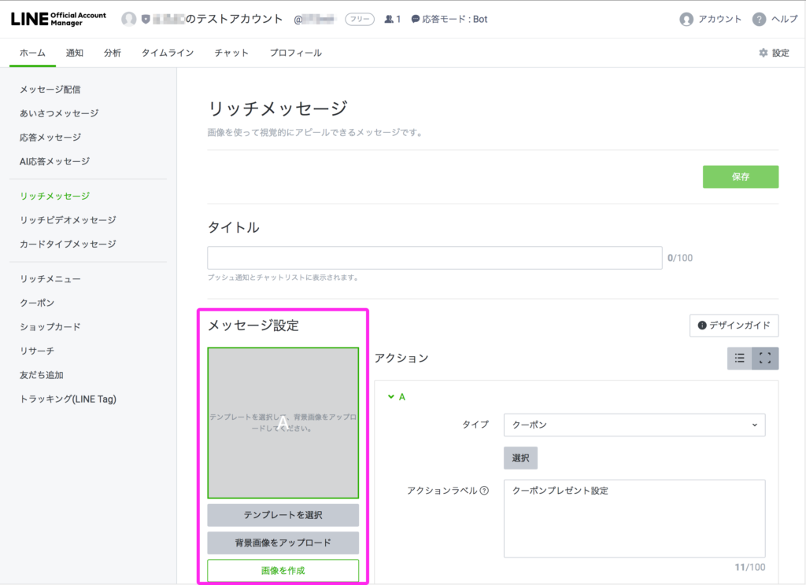
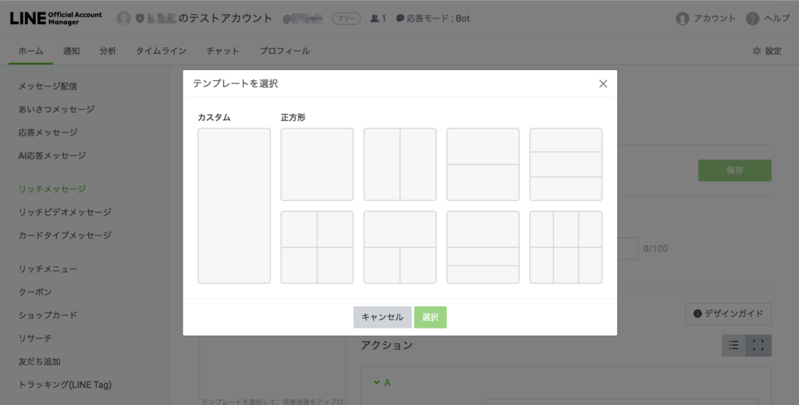
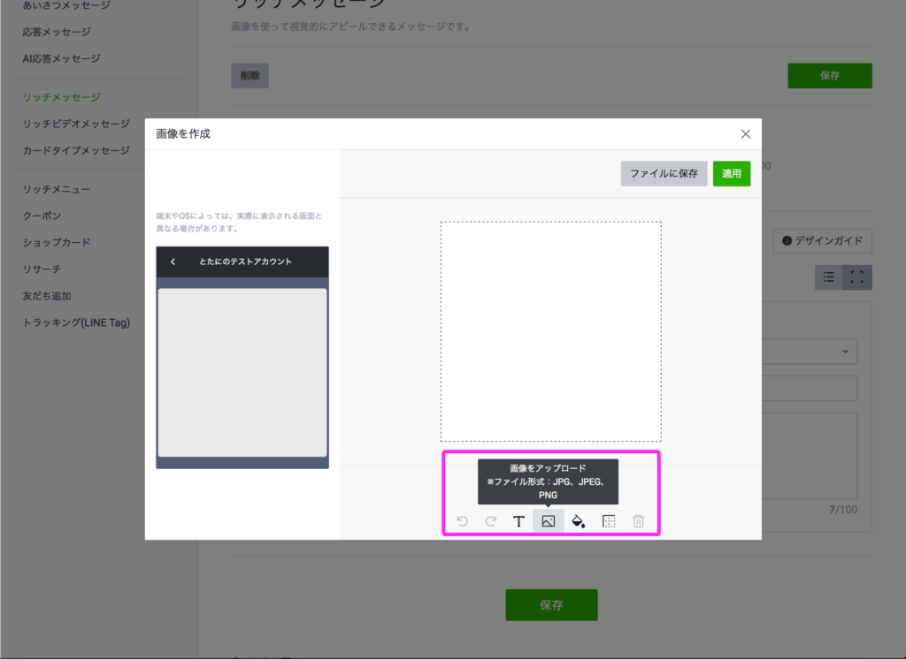
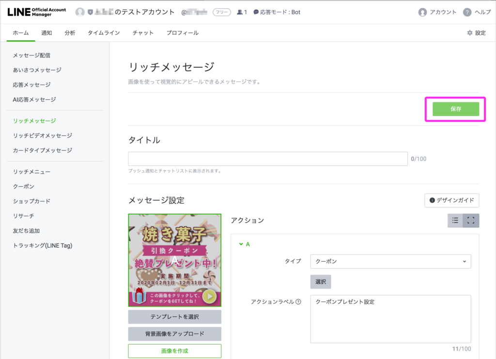
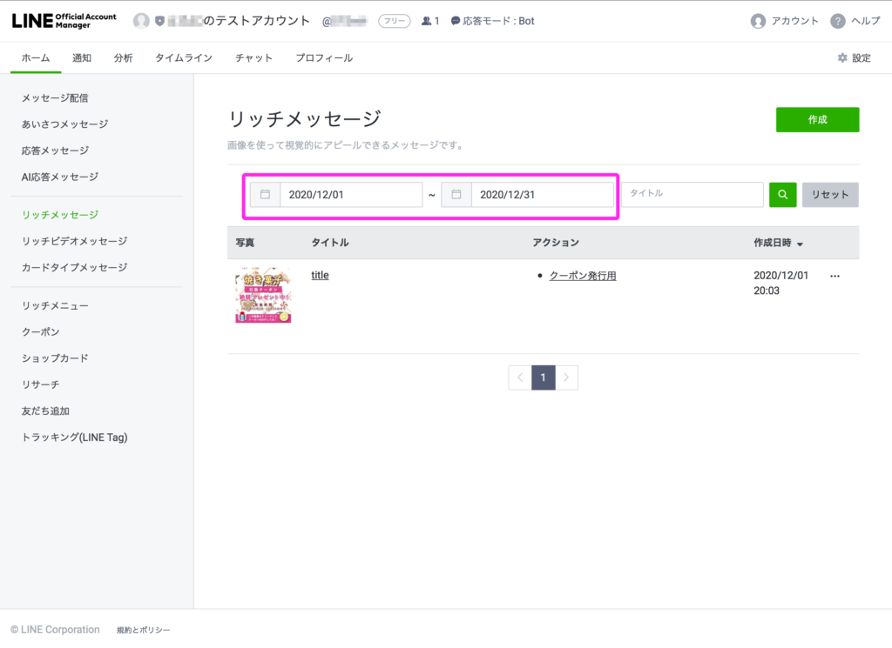
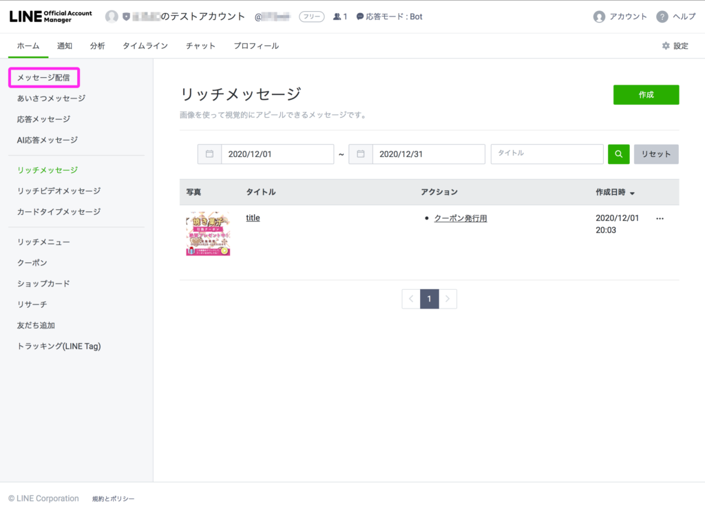

#015 リッチメッセージ配信の方法

こんにちは！ matsumotoです。そろそろ肌寒い季節になりましたね…。コロナ対策で定期的に換気を行うお店や事業所が増えましたが、皆さま風邪にもお気をつけくださいね！
本日は、LINE公式アカウントの「リッチメッセージ」について解説していきます。LINE公式アカウントのことを検索してこのブログにたどり着いてくださった方は、ぜひ過去のブログも遡って読んでみてくださいね！
※分からないところや、サポートが必要な方は、ぜひこのページ右下のバナーやプロフィール下の「友だち追加」ボタンからmatsumotoを友だち追加してください。初回60分無料相談（対面式・またはzoom）など、行なっています。
それでは、さっそく解説していきます。
（１）リッチメッセージとは
今回説明する「リッチメッセージ」は、簡単に言うと友だちみんなに配信できる画像付きのメッセージのことです。ご自分のお店やビジネスについて画像で直感的にアピールすることができ、さらにそこから任意のWEBサイトへ誘導したり、クーポンをプレゼントすることができます。これはLINE公式アカウントでないと出来ない機能なので、必ず活用してくださいね！
（２）リッチメッセージを作成

それではおなじみ、LINE Account Managerのページから、自分のアカウントにログインしましょう。画面左のメニューから「リッチメッセージ」を選択し、右上の「作成」ボタンをクリックすると、リッチメッセージの設定画面が表示されます。

まず、最初にリッチメニューのタイトルを決めて入力するのですが、100文字以内でしっかり特別感やお得感をアピールできるタイトルを考えてください。ここで興味を持たれないと開封してもらえず、何を仕掛けてもすべて無駄になる上、ブロックされてしまう可能性も高いです。友だちの顔ぶれを思い浮かべて、どんなタイトルならタップしてくれるのか、しっかり導線を考えましょう！
通常、配信した友だちのうち約50〜60%の人が開封してくれればおおむね成功、というような確率です。「女性限定」「今月お誕生日のあなたに」というような前書きを付けたり、季節のイベントや地元行事にからめるなど、いろいろ工夫してみてくださいね。
（３）リッチメッセージの画像

次に、リッチメッセージの画像を設定します。用意する画像は基本的に1040×1040px（ピクセル）の大きさですが、このあたりは知識がない人にはよく分からないですよね。あなたのお店やビジネスを直感的に伝えるために、オリジナルのイラストや効果的なデザインはとても重要です！ ここはプロのデザイナーやイラストレーターに作成してもらうというのもアリです。現在、ランサーズやクラウドワークス、ココナラ などで「LINE公式アカウントのリッチメッセージを作成します！」というクリエイターが多勢いますので、画像サイズやアピールしたい内容、ファイル形式（pngがオススメです）を伝えて作成してもらいましょう。
「全部自分でこだわって作りたい！」という方には、比較的簡単に画像をデザインできるツール（Camvaなど）もありますので、あなたの想いやこだわりをアピールできるよう、頑張ってください！
（４）アクションを選択する

ここからが少しややこしい内容になります。。。さきほど用意した画像を使って、どこか特定のURL先に誘導するか？それともクーポンをプレゼントするか？を選びます。具体的には、「アクション」の下のプルダウンメニューから、「リンク」か「クーポン」を選択します。（どちらも選ばない方法もあります。その場合、ただのイメージ画像として画像が表示されます。）
「リンク」を選択する場合は、誘導したいWEBサイトやSNSのURLを入力してください。クーポンを選択する場合は、別途設定しておいたクーポンを利用します。
※クーポンの作成方法については、このブログの「#005 LINEでクーポンを発行しよう！」をお読みください。
これらの使い分け方としては、「リンク」はご自分のお店やビジネスについて詳しく知ってほしい人向け（お店や会社のHP、SNSのURL等を入力します）。「クーポン」は、手っ取り早く友だち（＝お客様）にお得なクーポンを配布したい人向けです。どちらがより役に立つかは、ご自身でじっくり考えてお選びください。
その下の「アクションラベル」については、音声読み上げ機能付きのパソコンをお使いの人向けの親切設計です。任意で入力してください。
（５）メッセージ設定


ここまでくれば、ゴールはもうすぐです！「メッセージ設定」下の「テンプレートを選択」ボタンをクリックして、テンプレートを選びます。何種類ものテンプレートが表示されますが、この時点であまり複雑な仕掛けをしても成功率が低いので、ここは「正方形」を選ぶことをおすすめします！次に「画像を作成」をクリックし、先ほどの画像をアップロードします。

「画像を作成」から、簡単なデザイン画像を作ることもできますが、ここは「画像を作成」を選んでから、「画像をアップロード」のアイコンを選択して、クーポン画像をアップロードするやり方をオススメします。
（６）最後に


作成したリッチメッセージを「保存」し、期間を設定したら、左上の「メッセージ配信」をクリックしてください。再び右上に「作成」ボタンが表示されるので、それをクリックし、下にスクロールして「リッチメッセージ」を選択します。すると、先ほど作成したリッチメッセージが表示されますので、選択して、「配信」をクリックしてください。

リッチメッセージの作成と配信については以上になります！おつかれさまでした。それでは、また来週！
まずはLINE公式アカウントを開設しましょう！
●LINE公式アカウントの開設方法はこちら
●LINE公式アカウントをオススメする理由はこち
●LINE公式アカウントでできることはこちら
●Lステップでできることはこちら